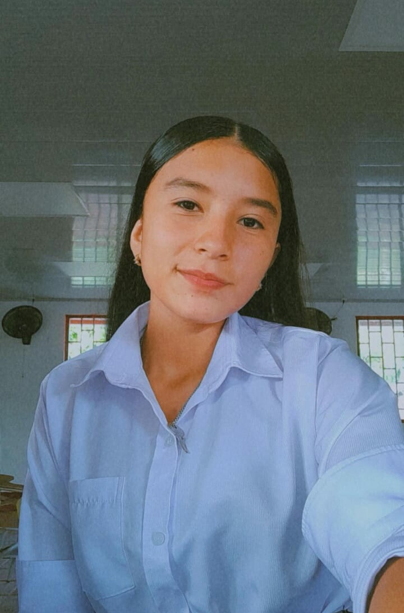

Perfil
DIDI TATIANA CHACÓN PEÑA, 17 años, nacida el 13 de agosto de 2007 en Cubará, Boyacá, bachiller y estudiando el Tecnico en programación de software en el sena saravena arauca .
Biografia
Didi Tatiana Chacón Peña, nacida el 13 de agosto de 2007 en Cubará, Boyacá, Colombia, soy una jove promesa en el campo de la tecnología. Con 17 años, ha demostrado un notable interés y habilidad en la programación de software, una pasión que comenzó a desarrollar desde una edad temprana, tambien que mi familia sienta un gran orgullo de mi por la dedicacion a mi estudio para asi mas adelante ayudarlos a ellos. Mi fascinación por la tecnología me llevó a estudiar programación de software en el Sena Saravena, donde comence a adquirir habilidades avanzadas en el desarrollo y diseño de software. Mi dedicación y enfoque en mis estudios me han ayudado a sobresalir en esta disciplina, destacándome por mi capacidad para resolver problemas complejos y mi creatividad en la creación de soluciones tecnológicas. A pesar de mi juventud, siempre e demostrado ser una persona comprometida y entusiasta en mi aprendizaje, reflejando un potencial significativo para contribuir al mundo de la tecnología en el futuro. Mi historia es un ejemplo inspirador de cómo la pasión y el compromiso pueden llevar a logros destacados, incluso a una edad temprana.
